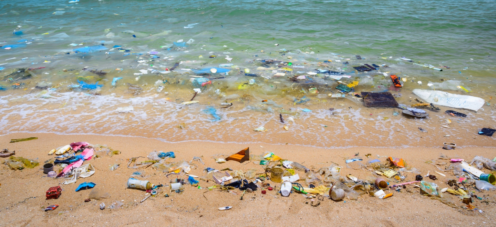
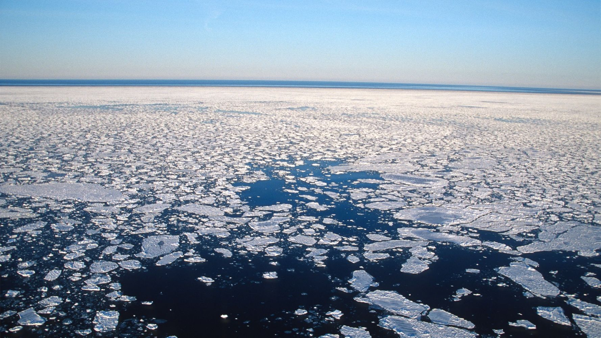

Evidences
- Marine Debris

The killing of the dolphins is often witnessed (and sometimes assisted) by representatives of Japanese dolphinariums, including trainers and veterinarians. The dolphinariums attend the hunts to buy showable dolphins for their own use or for sale to dolphinariums and amusement parks in other parts of Asia and Europe. The hunters make significant sums of money from these sales; a single dolphin can fetch more than $150,000. Most of the animals, however, are killed, and their meat and internal organs wind up for sale in restaurants and food stores in Taiji and major cities such as Osaka and Tokyo. Dolphin meat also contains toxic levels of methyl mercury and PCBs.
- Sea Ice

Although sea ice might not ever pass a tipping point, the same cannot be said for the immense ice sheet that covers Greenland. As global temperatures rise, Greenland’s ice sheet will continue to lose mass; the height of the ice sheet will steadily decrease as it melts, exposing it to warmer temperatures at lower elevations. “Every person in Germany emits around 10 tons of CO2 per year,” says Notz. “I think in the U.S. it’s about 16 tons. That allows me to calculate my own contribution to Arctic sea ice loss here in Germany—about 30 square meters every single year. “It suddenly becomes very clear how we all contribute to this loss of Arctic sea ice. It’s not something that happens by chance. Whenever we fly somewhere or drive our car, we can sit down afterwards and calculate how much sea ice we’ve just melted.” If our civilization belches another 700 to 1,000 gigatons of CO2 into the atmosphere, says Notz—about 20 to 25 years’ worth, at current rates—the Arctic’s summer ice will vanish. That’s about the emissions level compatible with the Paris Climate Agreement, which commits the world’s nations to limit global warming to no more than 2 degrees Celsius (3.6 degrees Fahrenheit) above preindustrial levels. The Paris agreement also calls upon nations to eventually pursue a more ambitious 1.5-degree target, a number that might allow sea ice to survive year round.